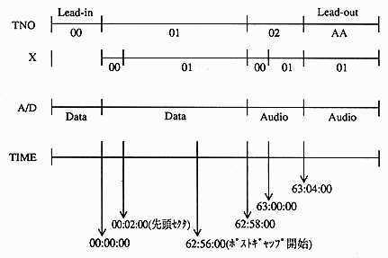

ABS TIME | LSN | FAD | |
First frame | 00:00:00 | − | 0 |
First sector | 00:02:00 | 0 | 150 |
Last sector | 63:01:74 | 283499 | 283649 |
Final frame | 63:03:74 | − | 283799 |
Leadout area start time | 63:04:00 |
“The first frame, first sector” is always the above time. The “last sector, last frame, lead-out area start time” is always the above time or smaller value.

Actually, the data sector can be used from the first sector to one sector before the start of the post gap. (About 566MByte) ∙ Each time an audio track is used increases by 1 minute, it consumes 9MB of data sector.